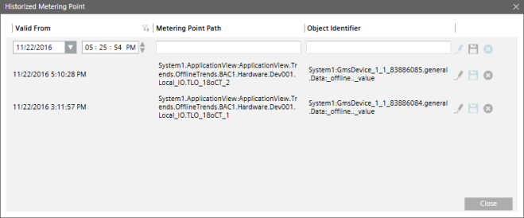

Historized Metering Point Dialog Box
This Historized Metering Point dialog box allows you to view the historized information, as well as enter values for the metering point.

Historized Metering Point Dialog Box | |
| Description |
Valid From | Date and time from when the object was associated with the meter. |
Metering Point Path | Physical path of the object associated with the meter. |
Object Identifier | Identifies the object associated with the trend log. |
Save | Saves the newly added metering point entry. |
Edit | Allows you to edit an existing metering point entry. You can only edit the Valid From field. |
Delete | Deletes an existing entry. |